A lógica central da microeconomia
A microeconomia estuda o comportamento de consumidores, empresas e mercados específicos e analisa como os preços se formam. Nesta aula, a sequência é: compreender quanto os consumidores desejam comprar, quanto os produtores desejam vender, como o mercado encontra um ponto de equilíbrio e, por fim, quão sensíveis são essas quantidades às mudanças de preços, renda e outras variáveis.
Intenção de compra dos consumidores.
Intenção de venda dos produtores.
Quantidade demandada = quantidade ofertada.
Sensibilidade das quantidades às mudanças.
Hipótese recorrente: coeteris paribus — analisar o efeito de uma variável mantendo as demais constantes.
O lado do consumidor
Demanda (ou procura) é a quantidade de determinado bem ou serviço que os consumidores desejam adquirir, em um dado período. Ela representa uma intenção de compra, e não necessariamente a compra efetiva.
Lei geral da demanda
Tudo o mais constante, a quantidade demandada varia em relação inversa ao preço do próprio bem.
pᵢ: preço do bem; pₛ: substitutos; p꜀: complementares; R: renda; G: gostos e preferências.
Por que a curva cai?
Efeito substituição: quando o bem fica relativamente mais barato, tende a substituir concorrentes.
Efeito renda: a queda do preço aumenta o poder aquisitivo do consumidor para aquele conjunto de compras.
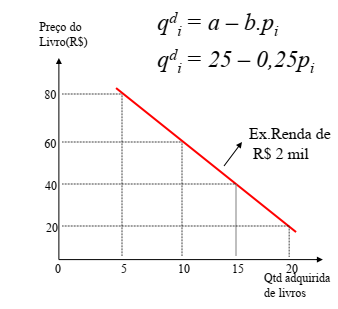
Substitutos
Se o preço de um bem aumenta, a demanda pelo seu substituto tende a aumentar.
Ex.: manteiga e margarina.
Complementares
Se o preço de um bem aumenta, a demanda pelo bem consumido em conjunto tende a diminuir.
Ex.: computador e software.
Renda
Normal: renda ↑ → demanda ↑.
Inferior: renda ↑ → demanda ↓.
Saciado: variação da renda não altera a demanda.
Quantidade demandada ≠ demanda
Preço do próprio bem: provoca movimento ao longo da curva.
Renda, bens relacionados, gostos, expectativas e número de compradores: deslocam a curva.
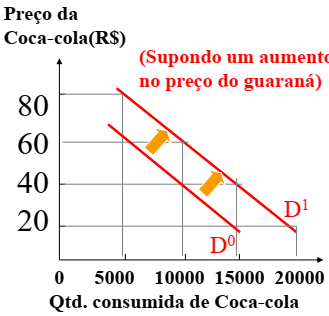
Utilidade, escassez e excedente
A teoria da demanda parte da ideia de que o consumidor procura maximizar sua satisfação. A aula diferencia utilidade total e utilidade marginal e usa o paradoxo da água e do diamante para relacionar utilidade marginal e escassez.
Excedente do consumidor: diferença entre a disposição máxima a pagar e o preço efetivamente pago.
O lado do produtor
Oferta é a quantidade de determinado bem ou serviço que os produtores desejam vender, em função dos preços, em um determinado período. O material assume produtores racionais, buscando lucro máximo dentro das restrições de custos.
Preço do próprio bem
Tudo o mais constante, se o preço do bem aumenta, há estímulo para aumentar a quantidade ofertada.
Preço ↑ Quantidade ofertada ↑
Outros determinantes
Preço dos fatores de produção, preços de bens substitutos na produção, tecnologia, objetivos do empresário e número de vendedores podem deslocar a curva de oferta.
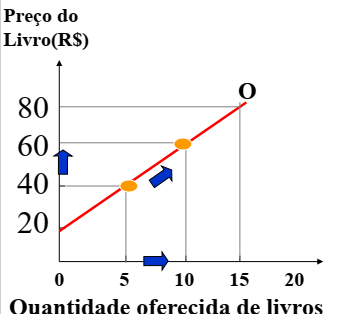
Custos dos fatores
Se o preço de mão de obra, terra, matérias-primas ou outros fatores aumenta, a oferta do bem tende a diminuir.
Tecnologia
Um aumento da tecnologia, mantidas as demais condições, aumenta a oferta do bem.
Quantidade ofertada ≠ oferta
Preço do próprio bem: movimento ao longo da curva.
Custos, tecnologia, bens substitutos na produção, metas e vendedores: deslocamento da curva.
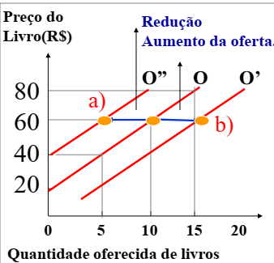
Oferta de mercado e excedente do produtor
A oferta de mercado é a soma das ofertas das firmas individuais a cada preço.
Excedente do produtor: diferença entre o preço recebido pelo vendedor e sua disposição para vender cada quantidade.
Quando os dois lados se encontram
O equilíbrio está no ponto em que as curvas de oferta e demanda se cruzam. Ao preço de equilíbrio, a quantidade ofertada é igual à quantidade demandada.
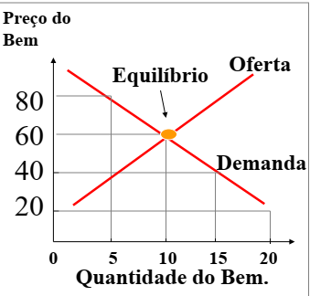
Excesso de oferta
Quantidade ofertada > quantidade demandada.
Mecanismo apresentado: fornecedores reduzem preços, aproximando o mercado do equilíbrio.
Excesso de demanda
Quantidade demandada > quantidade ofertada.
Mecanismo apresentado: fornecedores aumentam preços, aproximando o mercado do equilíbrio.
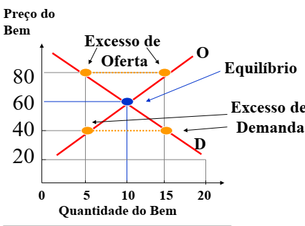
Aumento da demanda
Se a demanda se desloca para a direita e a oferta permanece constante, o material mostra aumento do preço e da quantidade de equilíbrio.
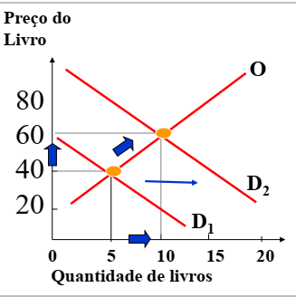
Redução da oferta
Se a oferta se desloca para a esquerda e a demanda permanece constante, o material mostra aumento do preço e redução da quantidade de equilíbrio.
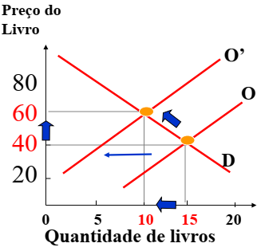
Mudanças simultâneas
Quando oferta e demanda se deslocam ao mesmo tempo, o efeito final depende da extensão relativa dos deslocamentos. O preço pode ter direção determinada em alguns casos, enquanto a quantidade pode depender de qual deslocamento é maior.
Medindo sensibilidade
Elasticidade é a alteração percentual em uma variável diante de uma variação percentual em outra, coeteris paribus. Em termos simples: mede sensibilidade, resposta ou reação.
Elasticidade-preço da demanda
É apresentada com sinal negativo, mas usualmente classificada pelo módulo:
|Epd| > 1: elástica
|Epd| < 1: inelástica
|Epd| = 1: unitária
O que torna a demanda mais ou menos elástica?
Disponibilidade de substitutos, essencialidade do bem, importância no orçamento e horizonte de tempo.
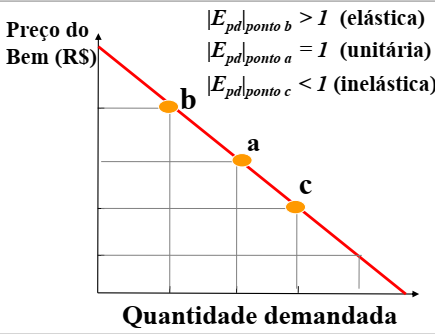
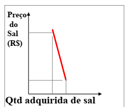
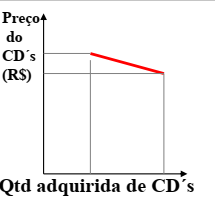
Casos extremos
Perfeitamente inelástica: Epd = 0.
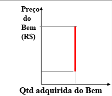
Casos extremos
Perfeitamente elástica: Epd → ∞.
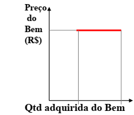
Receita total e elasticidade-preço da demanda
RT = preço × quantidade.
| Tipo | Preço ↑ | Preço ↓ |
|---|---|---|
| Demanda elástica | RT diminui | RT aumenta |
| Demanda inelástica | RT aumenta | RT diminui |
| Elasticidade unitária | RT permanece constante | |
Elasticidade-preço cruzada
EAB > 0: bens substitutos.
EAB < 0: bens complementares.
Elasticidade-renda
ERd > 1: bem superior/luxo.
ERd > 0: normal.
ERd < 0: inferior.
ERd = 0: saciado.
Elasticidade-preço da oferta
Epo > 1: oferta elástica.
Epo < 1: inelástica.
Epo = 1: unitária.
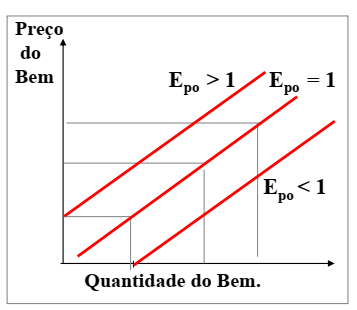
O que precisa ficar
20 questões para revisar a aula
As questões 1–16 são diretamente ancoradas nos conceitos apresentados; 17–20 integram e aplicam os conceitos da aula.
1. O que é demanda e por que ela não corresponde necessariamente à compra efetiva?
2. Explique a Lei Geral da Demanda utilizando a hipótese coeteris paribus.
3. Diferencie efeito substituição e efeito renda.
4. O que ocorre com a demanda por Coca-Cola se o preço de um substituto, como o guaraná, aumentar?
5. Diferencie bem normal, bem inferior e bem de consumo saciado.
6. O que é oferta e qual é a relação entre preço do próprio bem e quantidade ofertada?
7. Como o aumento do preço de um fator de produção afeta a oferta?
8. Como uma melhoria tecnológica afeta a curva de oferta?
9. Diferencie variação da oferta de variação da quantidade ofertada.
10. Como se obtém a oferta de mercado a partir das ofertas individuais?
11. Defina preço e quantidade de equilíbrio.
12. O que caracteriza excesso de oferta e qual mecanismo de preço é apresentado para corrigi-lo?
13. O que caracteriza excesso de demanda e qual mecanismo de preço é apresentado para corrigi-lo?
14. Se a demanda aumentar e a oferta permanecer constante, o que acontece com preço e quantidade de equilíbrio?
15. Se a oferta diminuir e a demanda permanecer constante, o que acontece com preço e quantidade de equilíbrio?
16. O que a elasticidade mede e por que ela é expressa em variações percentuais?
17. Um bem possui |Epd| = 1,5. Como classificar sua demanda e o que isso indica sobre a sensibilidade dos consumidores?
18. Se a demanda é inelástica, o que tende a ocorrer com a receita total quando o preço aumenta?
19. Uma elasticidade-preço cruzada positiva indica que relação entre dois bens? E uma negativa?
20. Integração: uma inovação tecnológica aumenta a oferta de um produto cuja demanda é inelástica. Explique, usando os conceitos da aula, quais variáveis do mercado serão diretamente afetadas e quais gráficos você utilizaria para analisar a situação.
Exercício quantitativo do material
Considere:
a) Determine o preço de equilíbrio e a quantidade de equilíbrio.
b) Se o preço for R$ 4,00, identifique se há excesso de oferta ou de demanda e calcule sua magnitude.